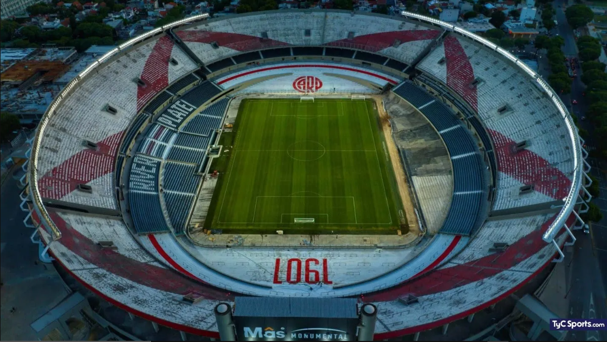

Estadio Mas Monumental

El Monumental de River Plate es el estadio más grande de Argentina y Sudamérica con una capacidad máxima de 84 567 espectadores13, se levanta sobre terrenos ganados a la costa cenagosa del Río de la Plata. La tarea de rellenar los bañados fue hecha por un escocés llamado Daniel White, quien a mediados del siglo xix había adquirido una estancia de 47 cuadras en esa zona. En esa superficie construyó un hipódromo, que se llamó “Hipódromo de Saavedra” o directamente “Hipódromo de White”. Por lo tanto, a principios del siglo xix la ubicación exacta del Monumental era parte del Río de la Plata. El Hipódromo de White ocupaba una extensión de 16 cuadras y disponía de tribuna para público. En 1866, una tormenta de Santa Rosa arrasó con la construcción y sus directivos buscaron otro lugar para un nuevo asentamiento. Encontraron un predio de 67 hectáreas en el que inauguraron en 1867 el famoso Hipódromo Argentino de Palermo.